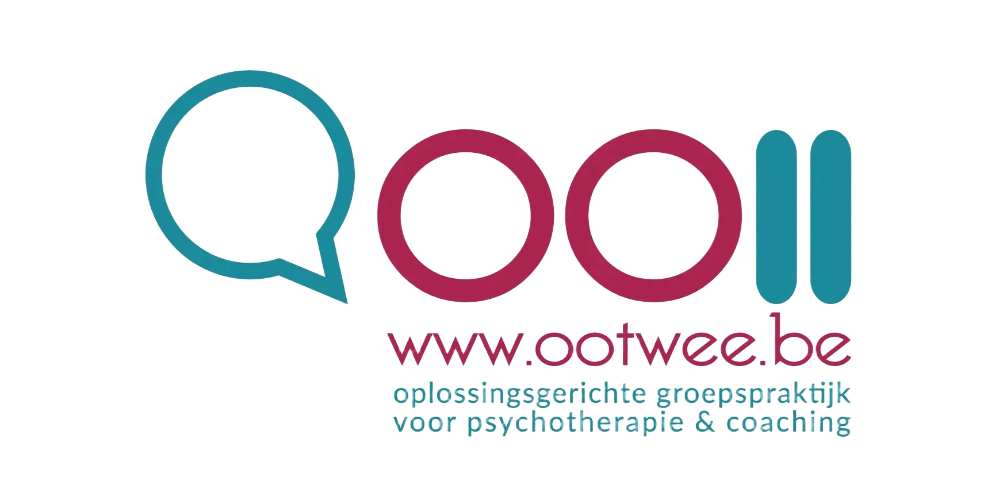
Hoe kunnen we je helpen?
Wat is je wens? Wat wil je anders zien? Wat wil je aanpakken? Dat is ons uitgangspunt.
- Wil je een bepaalde (nieuwe) richting uit in je persoonlijke of professionele leven? Heb je behoefte aan iemand die met je meedenkt?
- Heb je iets ergs meegemaakt en het lijkt jou niet los te laten? Heb je heftige emoties, gedachten en reacties die je niet van jezelf kent en jou onzeker maken? Of kamp je met negatieve gedachten over jezelf en/of de ander?
- Rouw je om een verlies? Heb je het moeilijk bij het verlies van een dierbare, een job die je verloren hebt, jouw partner die je verliet, het verlies van vitaliteit of idealen,...? Heb je nood aan therapeutische begeleiding hierbij?
- Heb jij / Heeft jouw kind ASS, AD(H)D of andere emotionele / psychische moeilijkheden en je wilt weten hoe je hiermee om kunt gaan?
- Wil je hulp bij studieplanning, studeren of heb je twijfels over je studiekeuze?
=> Ootwee heeft het in huis en helpt je graag verder!
Onze garantie: jij en jouw wens staan centraal.
Onze werkwijze: we doen wat werkt voor jou en leveren daarom altijd maatwerk.
Onze visie: we werken oplossingsgericht - zo kort als mogelijk, zo lang als nodig.
Pyschotherapie
Individueel
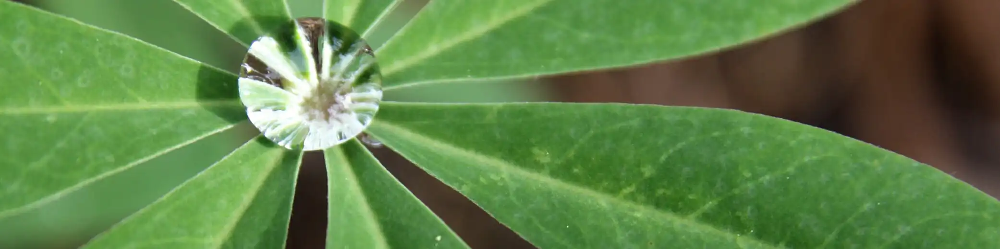
Volwassenen
Er zijn periodes in je leven dat het moeilijker gaat en waarbij externe steun of therapie nuttig kan zijn.
Je wil graag meer zelfvertrouwen, je beter voelen, zelfzekerder keuzes maken, nieuwe gewoontes aanleren.
Bij levensvragen, wensen tot verandering in je leven, moeilijke keuzes,
kan je bij ons terecht.
Voorbeelden van vaak voorkomende moeilijkheden zijn:
- Er niet in slagen om een bepaalde keuze te maken;
- Lichamelijke klachten, stress, burn-out;
- Er moeilijk in slagen om uit te voeren wat je je voorgenomen had;
- Piekeren, angsten, kwaad worden;
- Beseffen dat je veel meer in je mars hebt, maar er niet in slagen om vooruit te komen;
- Moeilijkheden met neen-zeggen, over je grenzen gaan;
- Het gevoel anders te zijn;
- Je leven lijkt saai, maar de stap naar die ene uitdaging lijkt zo groot.
We bieden ook begeleiding bij vragen rond hoogbegaafdheid, autisme, ADHD, Tourette of andere specifieke moeilijkheden zoals rouw.
Ben je een buitenmens? Vraag ons gerust om een wandelsessie.
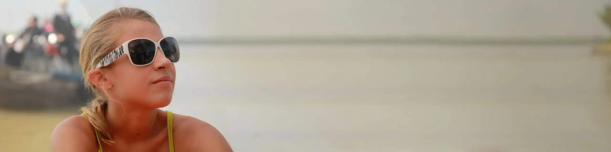
Pubers & Adolescenten
Opgroeien gaat niet altijd vanzelf. Veel jongeren maken moeilijke periodes door.
Voel je je down, kan je een luisterend oor gebruiken, kan je de steun en hulp van een neutrale volwassene gebruiken?
Dan kan je bij Ootwee terecht.
We starten steeds met één gesprek. Pas als je het gevoel hebt dat een volgend gesprek ook nuttig kan zijn voor jou, maken we een nieuwe afspraak. Elk gesprek kan dus het laatste zijn en hierover heb jij het laatste woord.
Voorbeelden van vaak voorkomende moeilijkheden zijn:
- Sociale relaties, het maken en houden van vrienden;
- Faalangst, perfectionisme;
- Je niet goed in je vel voelen;
- Studiekeuze, motivatie, leren leren;
- Het gevoel anders te zijn;
- Moeilijkheden thuis.
We bieden ook begeleiding bij vragen rond hoogbegaafdheid, autisme, ADHD, Tourette of andere (ontwikkelings)moeilijkheden.
Vind je praten niet makkelijk en beweeg je graag? Wij gaan met plezier met jou op stap.
Gezin & jonge kinderen
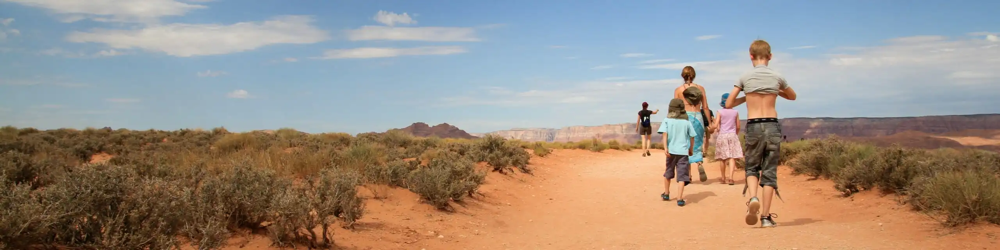
Vragen over opvoeding komen vaak voor. Opvoeden van kinderen is niet simpel en soms raak je de draad kwijt. Dan kan je inspiratie en steun gebruiken. Onze ervaring en achtergrond in opvoedingsondersteuning zetten we graag in, samen met jou of jullie.
Ook communicatie is belangrijk in een gezin. Wanneer er moeilijkheden zijn, nemen wij de rol op van bemiddelaar. Wij creëren een veilige context waarin jullie samen op zoek gaan naar werkbare oplossingen.
Soms heb je vragen rond de ontwikkeling van je kind. Deze worden altijd behandeld met de ouder(s). We bekijken samen of de aanwezigheid van je kind nuttig is (vragen bij kinderen tot +/- 12 jaar). Als therapie wordt opgestart met een kind, gebeurt dit steeds in het bijzijn van een ouder.
Voorbeelden van vaak voorkomende moeilijkheden zijn:
- Slapengaan, eetsituaties, regels en afspraken;
- Conflicten in het gezin;
- Echtscheiding, (co)ouderschap, nieuw-samengesteld gezin, plus-mama/papa;
- Verlies en verdriet;
- Moeilijkheden op school.
Heeft je kind veel energie en houdt het van bewegen? Dan trekken we het bos in.
Over ons
Wie
Marijke Rogier
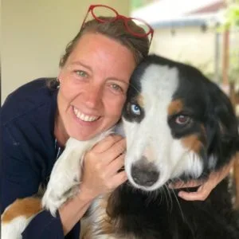
Ik ben Marijke, klinisch orthopedagoog & psychotherapeut.
Ik werk 25 jaar in het buitengewoon lager onderwijs. Ik begeleid kinderen, ondersteun leerkrachten en neem coördinatietaken op binnen het schoolteam.
In 2012 startte ik als psychotherapeut. Ik bouwde ervaring op met kinderen, jongeren en volwassenen met ontwikkelingsstoornissen (ASS, ADHD en Tourette). Binnen mijn opleiding tot oplossingsgericht therapeut specialiseerde ik me daarnaast in de aanpak van angsten, dwang, trauma en verslaving.
Therapeutisch werken met ouders en hun (jonge) kinderen is echt mijn 'dada'. Op een creatieve manier met hen aan de slag gaan, doe ik graag. Hiervoor gebruik ik speelgoed, boeken, verhalen, tekeningen en spelletjes.
Vaak komen jongeren en volwassenen langs met een complexe problematiek. 'Out of the box'-denken en zaken vanuit een ander perspectief bekijken, helpt hen vooruit en is mijn grote sterkte.
Ik ben erkend bij de FOD Volksgezondheid (visumnummer: 343449)
Leen De Bie
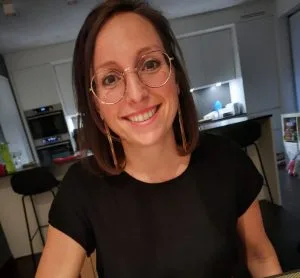
Ik ben Leen, klinisch orthopedagoog - specialisatie ADHD en autisme.
Ruim 15 jaar werk ik met volwassenen, jongeren en kinderen met een ontwikkelingsstoornis en/of een psychische kwetsbaarheid. Naast Ootwee werk ik in het buitengewoon onderwijs, waar ik kinderen begeleid en leerkrachten ondersteun.
Met mijn studieachtergrond, ruime praktijkervaring en als mama van twee fantastische meisjes help ik ouders, kinderen, jongeren en volwassenen graag verder op weg in hun zoektocht naar oplossingen.
Tijdens mijn begeleidingen leg ik de focus op wat goed loopt en de ondersteuning die je nodig hebt. Als auti-coach ga ik samen op zoek naar praktische handvatten die kunnen helpen bij dagelijkse moeilijkheden.
Als Rots- en Watertrainer gebruik ik in mijn gesprekken graag elementen hieruit. Het lichaam is immers niet los te koppelen van de geest en speelt een belangrijke rol in het aanvoelen van wat er speelt in onze gedachten. Zelfbewustwording, zelfcontrole en zelfvertrouwen zijn centrale begrippen in deze training. In de begeleiding gaan we samen hiernaar op zoek.
Kinderen, jongeren en/of hun ouders, en volwassenen kunnen bij mij terecht voor opvoedingsvragen, aanpak van gedragsmoeilijkheden, vragen rond autisme/ADHD en de begeleiding hiervan. Ook voor coaching in zelfvertrouwen en studiebegeleiding kan je bij mij terecht.
Ik geloof dat niemand moet “gefikst” worden. Je hebt de krachten al in je, soms heb je gewoon iemand nodig die deze krachten zichtbaar maakt.
Ik ben erkend bij de FOD Volksgezondheid (visumnummer : 327719)
Ellen Van Der Linden
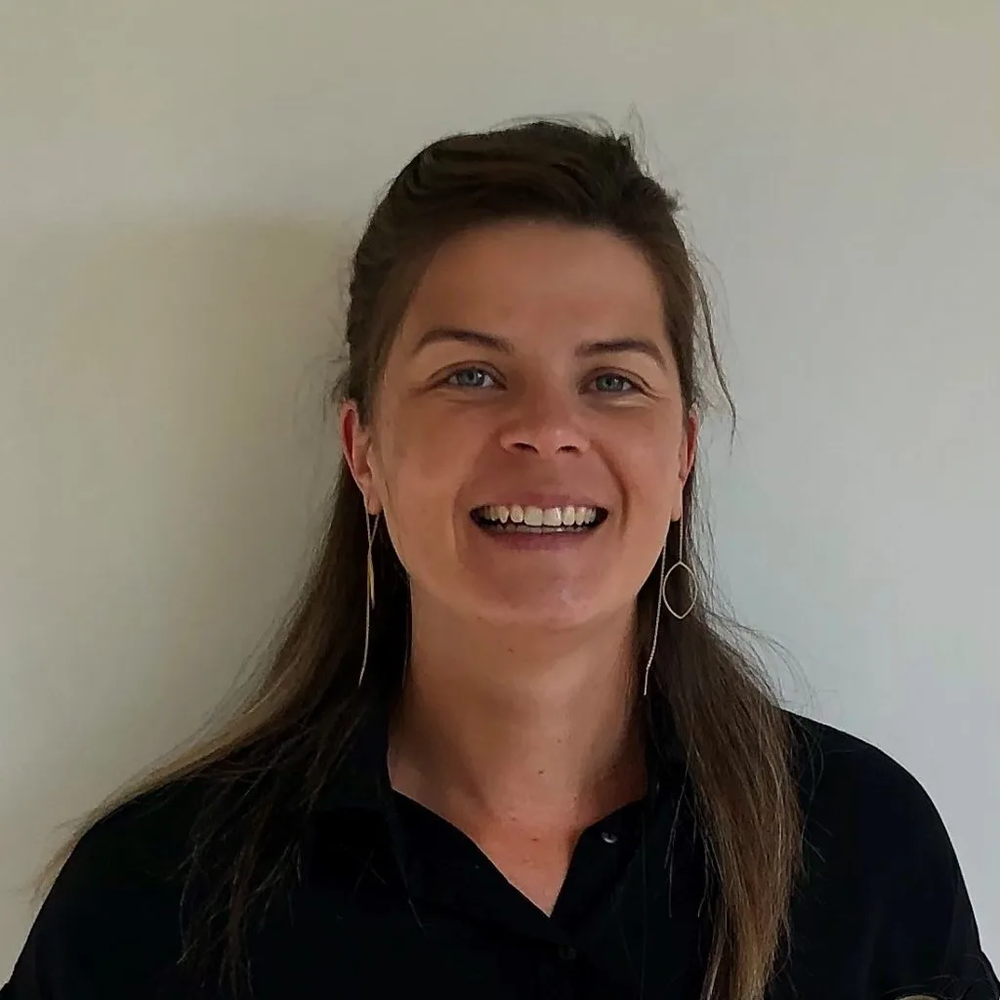
Ik ben Ellen, klinisch orthopedagoog, (contextueel systemisch) counselor & coach.
Ik werkte meer dan tien jaar met en voor kinderen en hun gezinnen in verschillende organisaties binnen de Jeugdhulp. Op die manier deed ik heel wat ervaring op rond opgroeien en opvoeden, en dat vaak in complexe situaties. Ik werd hierdoor sterk in het zien en erkennen van de last én de inzet van ieder gezinslid.
Als mama van drie kinderen heb ik veel handvaten gevonden in het gedachtegoed van mild en afgestemd opvoeden. Daarnaast heb ik me extra verdiept in de noden en behoeften van hoogsensitieve en hoogbegaafde kinderen.
Mijn functie als leidinggevende en opleiding tot coach gaven me dan weer veel kennis en ervaring rond werken met volwassenen en teams. Het boeit me enorm om mensen te helpen zichzelf beter te leren kennen en hen daardoor te begeleiden in hun groeiproces als individu/partner/ouder/collega/…
Ik geloof in de kracht en de goede bedoelingen van iedereen. Deze raken echter soms ondergesneeuwd door bepaalde zorgen, moeilijkheden, diagnoses, … Ik vertrouw er op dat ik als coach kan helpen om op zo’n momenten terug in verbinding te komen met jezelf en met je omgeving. Met een bijzonder oog voor de kleine dingen, wil ik kinderen, jongeren en volwassenen helpen om lastige situaties om te buigen en de (innerlijke) rust terug te vinden.
Afhankelijk van de situatie gaan de gesprekken door in Ootwee, bij het gezin thuis of op locatie.
Ik ben erkend bij de FOD Volksgezondheid (visumnummer: 356292)
Geert Petit
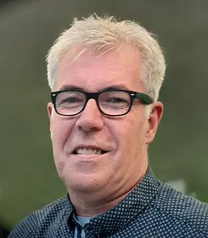
Ik ben Geert, maatschappelijk werker, criminoloog en gezins- en relatietherapeut.
Meer dan 30 jaar werkte ik in de bijzondere jeugdzorg en sinds vorig jaar ben ik aan de slag binnen het VAPH.
In 2002 startte ik als therapeut en tot op vandaag doe ik dat met heel veel goesting en passie. Ik heb me de voorbije jaren gespecialiseerd in alles wat te maken heeft met relaties: koppels, gezinnen, pubers die even in de knoop zitten, mensen met een relatiebreuk,....
Als therapeut ben ik als een gids waarbij de cliënt de bestemming kiest. De gids begeleidt de tocht en zorgt voor basisveiligheid en verbinding, en creëert exploratiemogelijkheden. Samen kan er ruimte gemaakt worden voor een nieuw verhaal.
An Van Den Berge
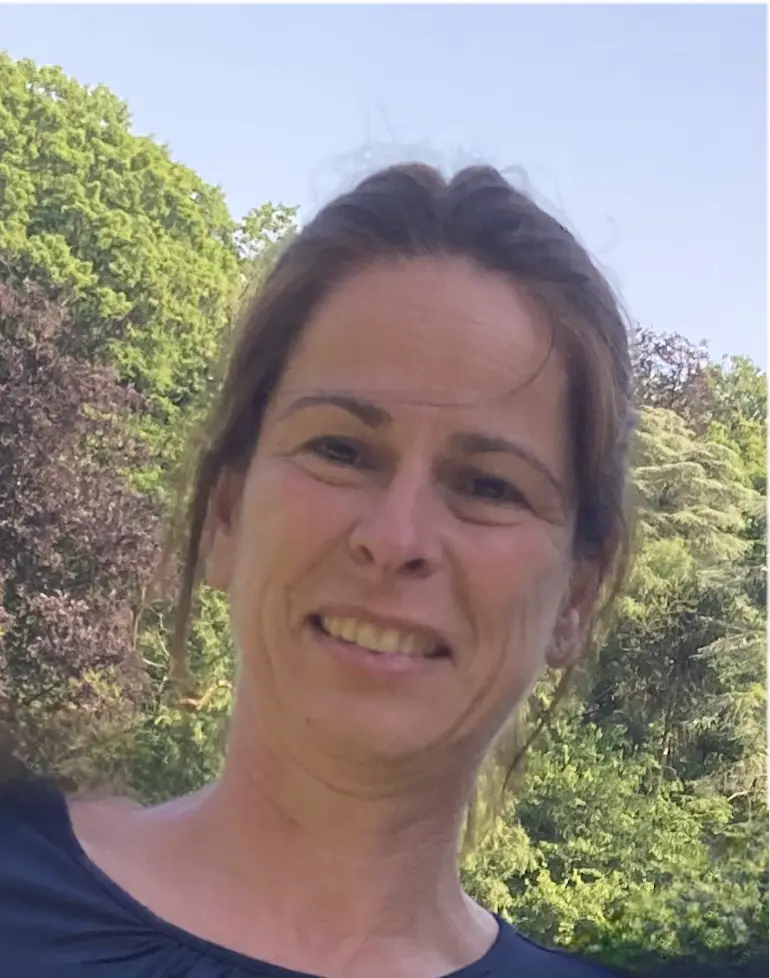
Ik ben An, orthopedagoog en oplossingsgerichte coach.
Ik werk als begeleidster en teamcoach in een voorziening voor kinderen en jongeren met een mentale beperking. Als teamcoach ondersteun ik begeleiders en teams in hun groei en ontwikkeling. Als begeleidster van kinderen en jongeren met ASS, ADHD, hechtingsproblematiek en uitdagingen rond emotieregulatie bouwde ik doorheen de jaren waardevolle ervaring op.
Als oplossingsgerichte coach wil ik er zijn voor kinderen, jongeren, volwassenen met een hulpvraag in hun persoonlijke ontwikkeling; voor gezinnen die voor uitdagingen staan op vlak van opvoeding en zoeken naar houvast en handvaten.
Samen ontdekken we wat werkt, hoe ieder in zijn eigen kracht kan staan en mogelijkheden kan vergroten om met uitdagingen om te gaan. We werken op maat: via gesprek, creatieve materialen of spel, steeds in een sfeer van verbinding, vertrouwen en respect.
Sylvie Depaepe
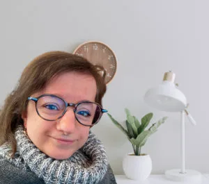
Ik ben Sylvie, erkend klinisch orthopedagoog & psychotherapeut.
Vanuit praktijk Muze te Eke (Nazareth) bied ik psychotherapie aan kinderen (vanaf 8 jaar), jongeren, en volwassenen doorheen leuke en moeilijke momenten in het leven. Ze is gericht op herstel, vertrouwen, zelfvertrouwen, persoonlijke groei, en andere noden. Daarnaast ben ik gespecialiseerd in trauma, verlies en rouw. Graag ben ik een ’compagnon-de-route’ die luistert en inspireert. Ik werk oplossingsgericht, we doen wat voor jou werkt!
Hoewel ik enkel nog vanuit praktijk Muze actief ben als psychotherapeut, blijf ik wel betrokken bij het Ootwee-team, en verwijzen wij voor vele hulpvragen onderling naar elkaar door.
Meer info over Muze: www.muze-psychotherapie.com of mail naar muze.psychotherapie@gmail.com
Hoe
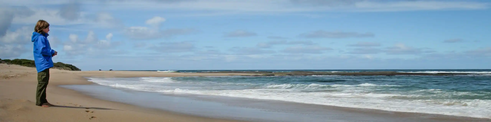
Oplossingsgericht
Oplossingsgericht werken is een specifieke manier om problemen te benaderen. Dit heeft invloed op onze manier van begeleiden. Deze aanpak bestaat al sinds tientallen jaren en werd ontwikkeld vanuit diepgaand onderzoek naar hoe we mensen het best vooruit kunnen helpen.
Hoe doen we dat?
Mensen komen in therapie of zoeken een coach omdat ze verandering wensen. Met die wens tot verandering gaan we samen aan de slag. We gaan op zoek naar wat mensen helpt om vooruitgang te maken wanneer ze het gevoel hebben vast te zitten. Dit is voor iedereen anders.
Wanneer we hierop een beter zicht hebben, kunnen we heel kleine stapjes plannen om actief aan de slag te gaan. Op die manier krijgt de cliënt geleidelijk aan opnieuw meer controle over zijn leven of (werk)situatie.
Nog vragen? Contacteer ons gerust of breng je vragen mee op gesprek.
Wat
Praktisch
Onze tarieven zijn:
- Individuele therapie of coaching € 70
- Ouderbegeleiding of gezinsgesprek € 85
- Partner- of koppelgesprek € 85
Een sessie duurt 50 à 55 minuten.
Terugbetaling via je ziekenfonds is mogelijk. Meer info vind je op de website van je ziekenfonds of bij ons.
Gelieve een afspraak tijdig te annuleren. Verwittig je meer dan 24u op voorhand, of een annulering door overmacht of ziekte, is kosteloos. Annuleer je pas binnen 24u, vragen we de helft van ons tarief. Indien de afspraak niet wordt geannuleerd, zal deze volledig worden aangerekend. Bedankt voor jullie begrip.
Binnenkijken
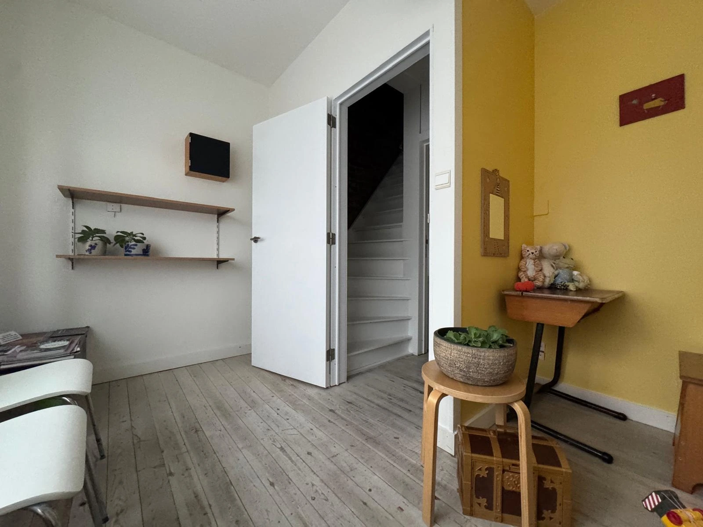
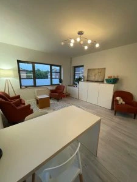
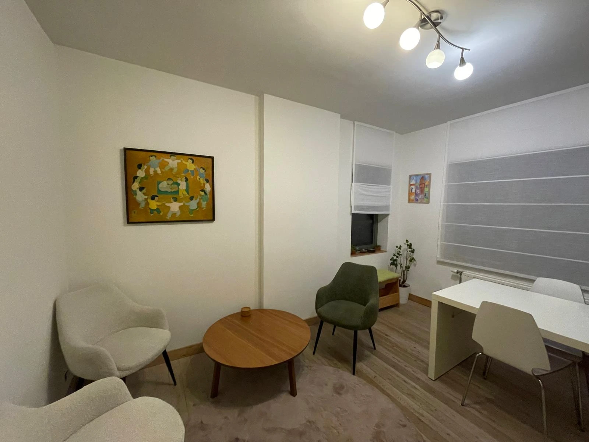
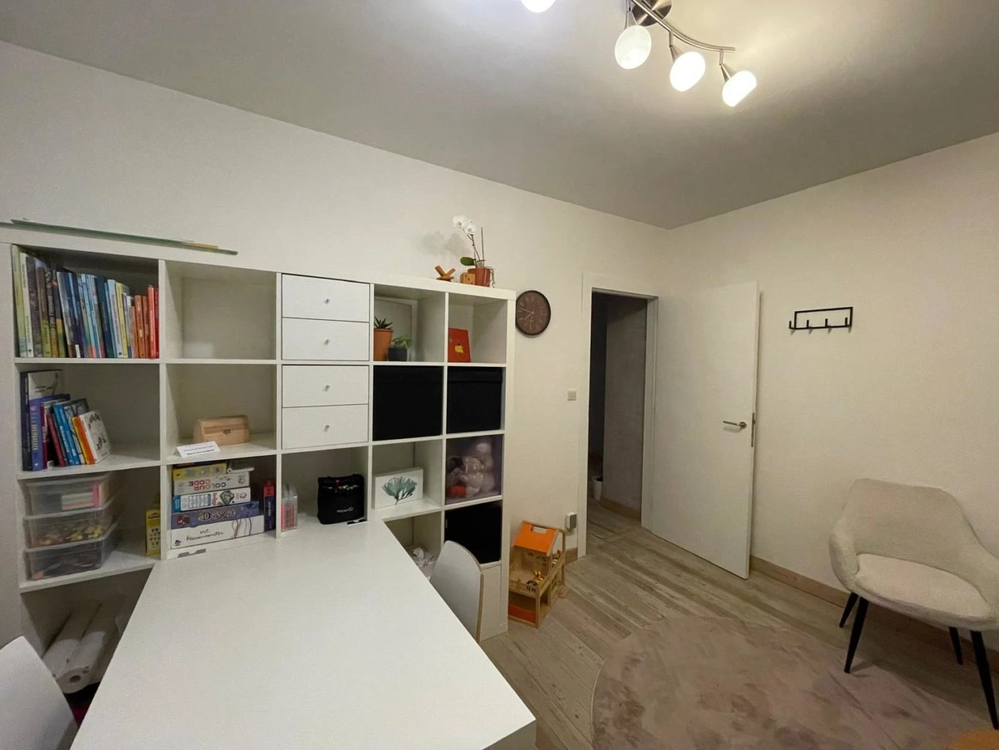
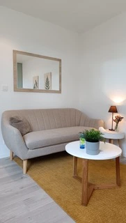
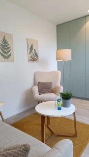
Contact
Locatie 1
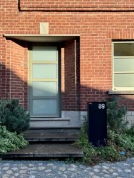
Beislovenstraat 89, 9620 Zottegem
Marijke - 0476 80 05 74 - marijke@ootwee.be
Ellen - 0486 97 43 08 - ellen@ootwee.be
Geert - 0479 29 61 41 - geert@ootwee.be
An - 0474 25 60 52 - an@ootwee.be
Locatie 2
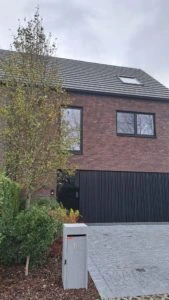
Kareelstraat 18, 9550 Herzele
Leen - 0497 68 60 43 - leen@ootwee.be
Antenne Muze (Eke-Nazareth)
Sylvie - 0488 96 83 90 - muze.psychotherapie@gmail.com